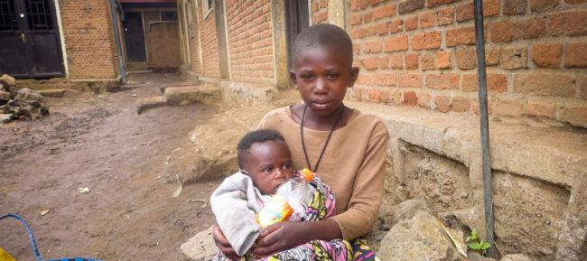

<< Notre association a pour mission de préserver et de renforcer l’aide en faveur des personnes les plus fragilisées en particulier les enfants... >>
Comme nous, plusieurs de ces personnes semblent subir psychologiquement de leur passé douloureux. Nos pensées se penchent respectivement à notre regrettée Ange Justine, aux enfants rescapés du génocide perpétré contre la population tutsi au Rwanda dont les parents ont été tués injustement et donc, nous savons combien lourde et leur perte et quel arrachement du cœur représente ce vide. Nous pensons également aux rescapés des massacres en Afrique, au Yemen, en Birmanie et partout dans le monde sans toutefois oublier tous les enfants qui vivent dans la rue et qui ne peuvent pas se rendre à l’école comme le reste des enfants du monde. Pour réaliser nos rêves, nous faisons appel aux généreux afin que nous puissions aller au bout de nos projets. Primo, nous avons pu nous rendre dans plusieurs pays différents ; ce qui nous a permis d’observer et de confirmer l’état d’urgence dans lequel se trouve une partie de la population qui lutte parfois entre la vie et la mort.
L’on constate qu’au 21ème siècle, les gens meurent sur la route parce qu’ils n’ont pas de quoi manger alors que dans certains pays, on jette tous les jours des milliers de tonnes de nourritures qui n’ont pas été consommées !!!. Ce qui nous a le plus choqué ; les enfants ne puissent pas aller à l’école et ce, considérant qu’ils n’ont pas d’uniformes voire même les habits tout simplement ; qu’ils n’ont pas de livres, de cahiers, de stylo et enfin et ils n’ont pas de quoi manger. En définitive, ces enfants préfèrent se livrer à eux-mêmes étant donné que leurs parents n’ont pas de possibilités de faire face à la pauvreté ; ce qui ne permet pas aux enfants de vivre comme le reste des enfants du monde. Du coup, les enfants choisissent d’aller travailler dans les conditions pénibles et dégradantes afin de subvenir à leurs besoins et ceux de leurs parents (dans certaines conditions) alors qu’en principe, les parents sont tenus d'assumer, à proportion de leurs facultés, l'hébergement, l'entretien, la santé, la surveillance, l'éducation, la formation et l'épanouissement de leurs enfants durant toute leur formation.
Secundo, les principes d’hygiène et d’accompagnement psychosocial des enfants en détresse restent pour nous un atout primordial. Nous devons donc promouvoir la santé des enfants en tant qu’acteurs de la société de demain. Force est de constater que faute de moyens financiers dans certaines régions ; en guise d’exemple, les femmes enceinte en phase d’accouchement meurent car les dispensaires se trouvent à une longue distance de leur domicile, que des moyens de transport restent un entrave pour permettre à celles-ci d’atteindre l’hôpital dans les conditions dignes ; ce qui provoque la mort de plusieurs femmes et leurs bébés lors de l’accouchement. Avant qu’elle ne rende son âme à Dieu, Ange-Justine était sensible à la situation des enfants en souffrance, notamment ceux ; qui sont laissés dans un désespoir par les guerres et différents conflits dans le monde.
Elle a côtoyé les enfants rescapés du génocide perpétré contre la population tutsi au Rwanda (devenus adultes actuellement) et elle a été touchée par leur souffrance; pour se rendre compte que si tout le monde ne réagit pas, l’avenir de ceux-ci sera mis en cause. Outre les conséquences de ces atrocités, d’autres enfants ont perdu leurs parents et ont besoin d’une protection spéciale tout en mettant en œuvre une série d’actions notamment les mesures adéquates de lutte contre les maladies sexuellement transmissibles (MST). Maintenant qu’Ange Justine n’est plus en vie, en sa mémoire, nous vous proposons cette association pour la lutte d’un monde meilleur, un espoir d’avenir qui ne peut se réaliser qu’avec la solidarité, la générosité des différents acteurs à travers le monde ; ce qui la rendra plus heureuse et apaisée éternellement là où elle est reposée paisiblement